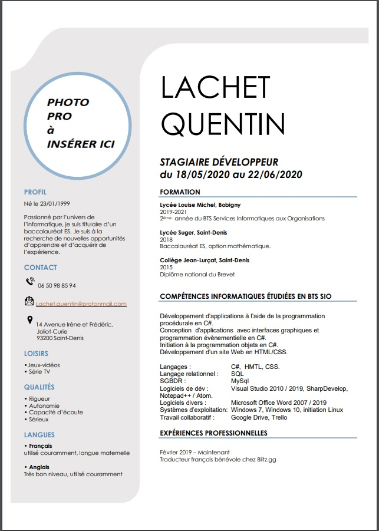
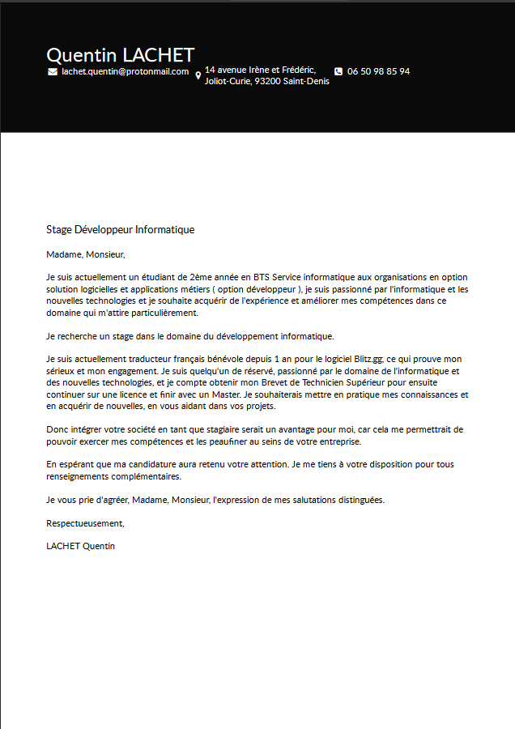
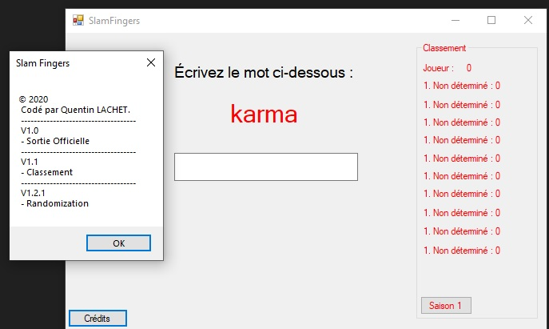
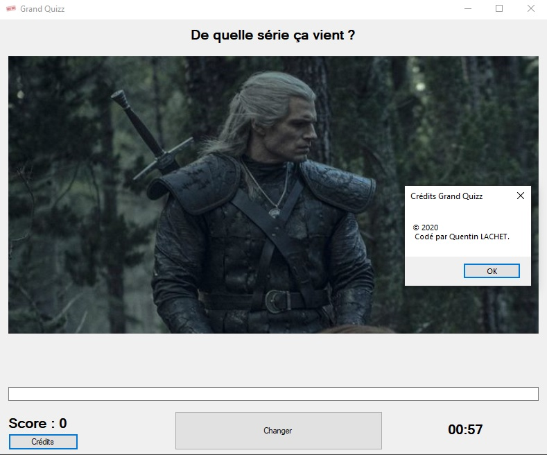
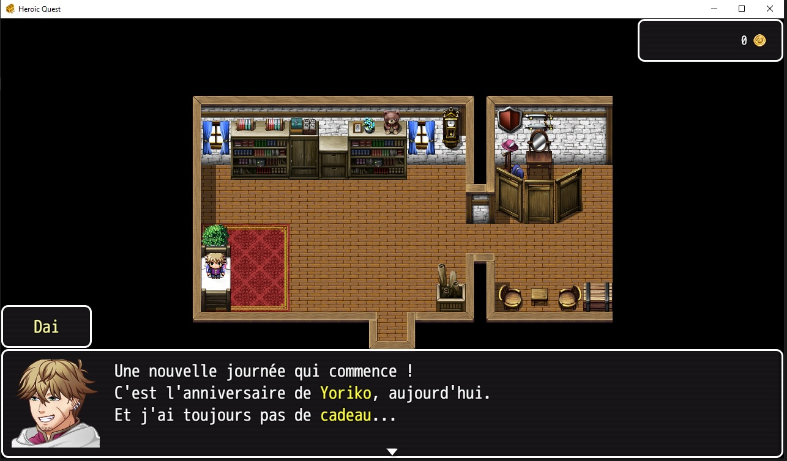
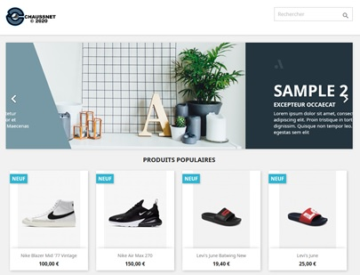
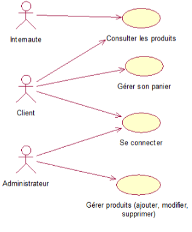
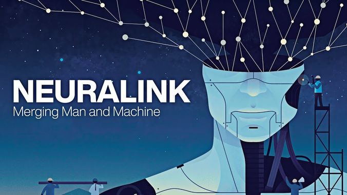

Je m'appelle LACHET Quentin et je suis un étudiant de 2ème année de 21 ans en Brevet de Technicien Supérieur (BTS) Services Informatiques aux Organisations (SIO) en option Solution Logiciel et Application Métiers (Développeur).
Cette formation se divise en deux filières : L'option SLAM (développeur) et l'option SISR (Solutions d’infrastructure, systèmes et réseaux). J'ai choisi de me spécialiser dans le développement informatique qui a toujours été une de mes passions !
Curriculum Vitae

Lettre de motivation

Ma Situation professionnelle
[Work In Progress]
Voici les divers projets que j'ai effectué le long de mon BTS SIO :
Retour en arrièreSLAM Fingers, application codé en c# de dactylographie sur les noms des champions de League of Legends, téléchargeable ici.
Situation professionnelle n°3 Grand Quizz
[Work In Progress]
Retour en arrièreGrand Quizz(ou Slam Sauce), application codé en c# dont le but est de trouver le plus de nom de série ou de films possible en 1 minute, téléchargeable ici.
Situation professionnelle n°4 Heroic Quest
[Work In Progress]
Retour en arrièreHeroic Quest, un rpg en cours de développement crée avec l'aide de RPG Maker MV. Téléchargeable ici
Projet Chaussnet
[Work In Progress]
Retour en arrièreChaussnet, un projet noté réalisé en première année de BTS SIO avec le CMS Prestashop.
- Participation à un projet d'évolution d'un SI (solution applicative et d'infrastructure portant prioritairement sur le domaine de spécialité du candidat)
Contexte :
La société NetBouquet est spécialisée dans la vente de bouquets aux entreprises.
Elle vous demande de créer un site Web pour compléter le service actuel des commandes qui ne se fait pour l’instant que par téléphone, fax, ou mail.
Les entreprises clientes seront obligatoirement abonnées auprès de NetBouquet pour pouvoir commander par internet.
Existant :
La base de donnée est déjà crée et remplie. Le site est en partie opérationnelle pour la navigation visiteur.
Besoins :Accessibilité & Sécurité :
- Une partie du site est public
- Consultation de la liste des produits
- Voir la présentation de l'entreprise
- Un formulaire d'identification (connexion) qui permet d'accéder à la partie sécurisé du site
La partie sécurisé du site est accessible à deux types d'utilisateurs : Admin
- Création, Suppression, Modification des bouquets
- Consulter la liste des clients, suivre les commandes
Client
- Consulter les bouquets
- Passer des commandes en ligne
- Consultation des anciennes commandes
Utilisateurs :
L'application sera utilisé par les visiteurs du site qui deviendront potentiellement des acheteurs. Elle sera également utilisé par les administrateurs du site. Ils disposeront de nom d'utilisateur et mot de passe fournies.
Contraintes : Architecture
L'application respectera l'architecture du modèle MVC.
Ergonomie
Le langage de script côté serveur est le PHP, avec une base de données MySql
Modules
L'application présente deux modules :
- Commande pour les clients : FRONT OFFICE
- Gestion des produits : BACK OFFICE
Description du domaine de gestion : Les visites sur le site
Ils pourront lire les renseignements sur l’entreprise, et voir les produits proposés.
La gestion des produits
L’administrateur pourra voir la liste des produits. Des liens lui permettront de gérer les produits : les modifier, les
supprimer ou en ajouter. Pour cela, il faudra qu’il se connecte.
Les commandes & le panier
Les clients qui possèdent un identifiant et un mot de passe (fournis par l’entreprise NetBouquet) pourront passer des
commandes, et voir l’historique de leur commandes.
Specifications fonctionnelles de l'application de NetBouquet Diagramme des cas d'utilisation
La définition des cas d'utilisation est une étape très importante, c'est à partir de ce découpage que s'organisera l'application ; il ne faut absolument pas négliger cette étape.
Nous aborderons 4 cas d'utilisation, un pour les internautes, deux du front office (acteur les clients) et un du back office (acteur l'administrateur)

Ma Veille Technologique

[Work In Progress]
Mon thème de veille technologique : Le Neuralink et les puces sous-cutanées.
Qu’est-ce que la veille technologique ?
La veille technologique comprend plusieurs choses comme la collecte, le partage et la diffusion d’informations,
permettant d’anticiper ou de s’informer sur des changements, lancement de nouveaux produits, processus, concepts, innovation, etc,
afin d’évaluer l’impact sur l’environnement et le monde.
Comment ai-je récolter les informations ?
J'ai utiliser diverse méthode afin de récolter le maximum d'informations possible sur mon thème de veille technologique :
Les alertes
Elles signalent la publication de nouvelle informations dans une revue, un portail, un blog ou un site web.
Le micro-blogging
Échanges de messages instantanés courts pour partager de l'information avec une communauté d'internautes. ( Twitter, Reddit )
Flux RSS
Moyen simple et pratique d'être alerté en permanence sur un domaine d'actualité qui vous intéresse.
Les fils s'actualisent automatiquement et en permanence, sans que vous soyez obligé de vous connecter sur vos sites d'informations préférés.
Neuralink est la contraction de Neural et de Link. Avant tout Neuralink est une startup neurotechnologique d'Elon Musk qui développe des implants cérébraux d'interfaces neuronales directes, donc en plus simple des systèmes électroniques implantés dans le cerveau afin de lire ou contrôler certains signaux cérébraux avec une interface de communication directe entre un ordinateur et la puce en question, une interface Homme-Machine.
La société vise donc à développer des composants électroniques pouvant être intégrés dans le cerveau, afin de mettre en symboiose le cerveau et l'intelligence artificielle pour améliorer l'Humain ou le soigner de certaines maladies neurologiques.
Max Hodak, le Président de la compagnie. Il a travaillé sur le développement d'interface cerveau-ordinateur à la Duke University.
Matthew McDougall, Chef de la NeuroChirurgie chez Neuralink.
Vanessa Tolosa, Directrice de l'interface neuronale.
DJ Seo, Directeur de l'implantation système.
Philip Sabes, Scientifique sénior qui a étudié les signaux cérébraux.
Tim Gardner, professeur de biologie à l'université de Boston, où ils ont travaillé sur l'implantation de puce cerveau-ordinateur sur des oiseaux.
Ben Rapoport, neurochirurgien, avec un doctorat en ingénierie électronique et informatique du MIT.
Tim Hanson, chercheur au Berkeley Sensor and Acuator Center.
Le but ultime de Neuralink est de créer une "interface neuronale complète", qui ferait partie de vous, ce qui donnerait la possibilité au cerveau de se connecter sans fil avec le Cloud, d'autres ordinateurs et également d'autres cerveau possédant l'interface. Tout cela sans le moindre effort, avec une sensation ressemblante à la pensée.
Ce qui effraie beaucoup de gens, Elon Musk dit que le niveau de technologique disponible aujourd'hui rends déjà les Humains, des "cyborgs". Son but est que l'Humain fusionne avec l'IA et il a pour attention de combattre la mauvaise utilisation de l'IA, il dit également qu'il faudra faire le choix entre évoluer ou être laissé derrière, obsolète.
D'après lui, il pense que les interfaces cerveau-machine pourront être utilisé par les gens sans besoin médicaux, dans les huit à dix prochaines années.
Elon Musk annonce dans une interview que son projet permettra de soigner l'autisme et la schizophrénie, ce qui lui a suscité des critiques et du scepticisme, car d'après la National Autistic Society britannique, l'autisme n'est pas une maladie, c'est un trait de la personnalité d'une personne, car la personne voit le monde autrement et par l'occurrence, il ne peut pas être soigné par le Neuralink.